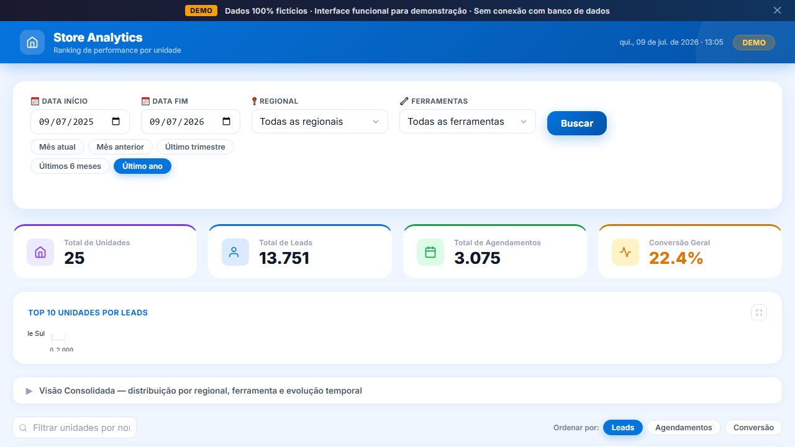
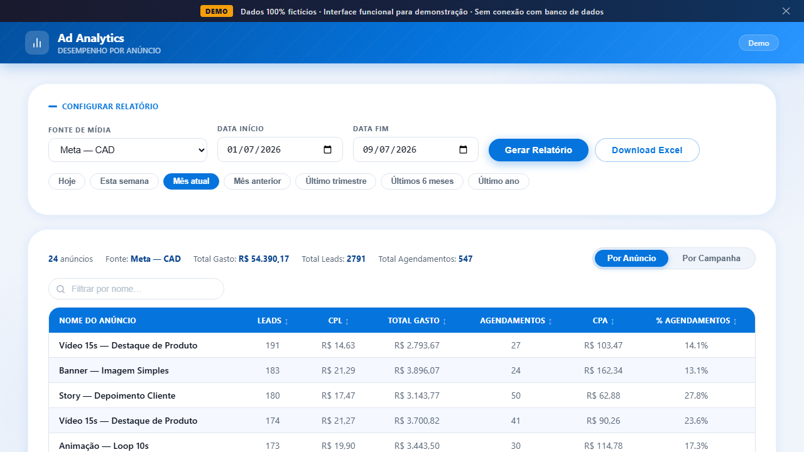
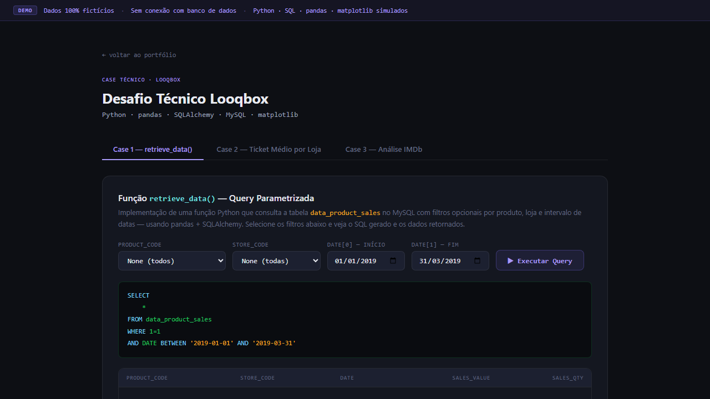
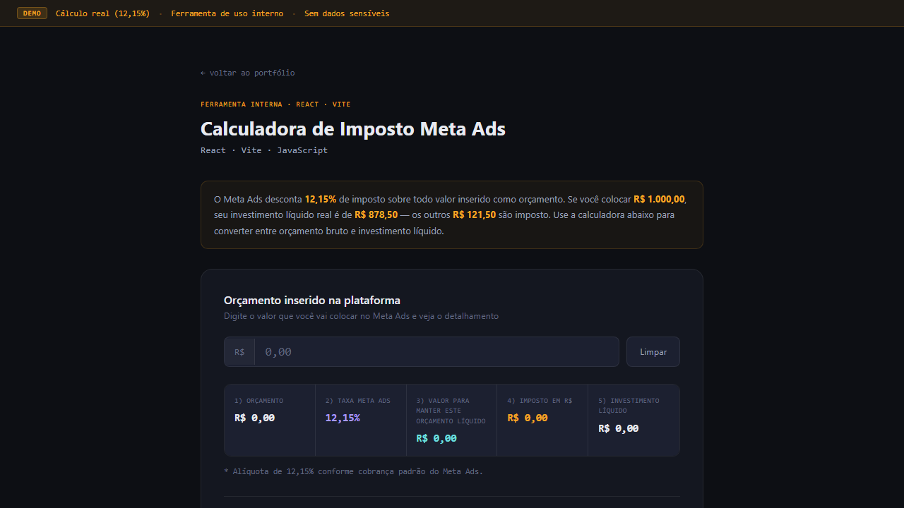
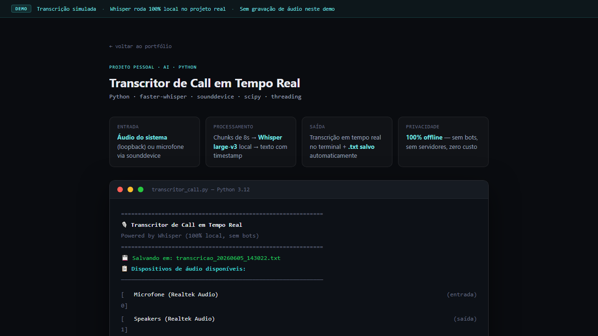
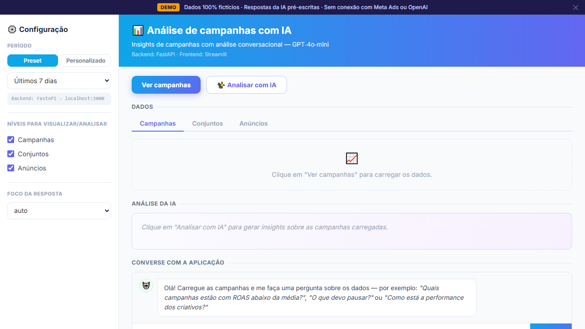

Store-Level Analytics
Análise de 280+ lojas espalhadas em 16 regionais era manual, lenta e sem visão granular por unidade.
280+Lojas
16Regionais
14Canais
Transformo dados de mídia, CRM e tracking em dashboards, automações e decisões de crescimento.
Aberto a oportunidades em Marketing Analytics, BI, Growth Analytics e Martech.
Projetos reais com problema definido, solução construída e impacto mensurável.

Análise de 280+ lojas espalhadas em 16 regionais era manual, lenta e sem visão granular por unidade.

Análise por anúncio cruzando dados de plataforma com leads e agendamentos do CRM — tudo manual até ser automatizado.
Consolidação de 9+ plataformas de mídia era feita manualmente — horas de trabalho diário por regional.
Problemas reais que já apareceram em operações de marketing — e que eu sei resolver.
Consolido dados de mídia, CRM, lojas e planilhas em visões únicas e estruturadas para análise — sem copiar e colar entre abas.
Automatizo rotinas de coleta, tratamento e exportação de dados — o que levava horas passa a rodar sem intervenção, diariamente.
Implemento e audito eventos via GTM, GA4, pixels e APIs server-side para que as conversões que chegam na plataforma correspondam à realidade.
Crio dashboards e análises segmentadas para identificar onde está o problema — se é o canal, a regional, a loja ou o funil.
Transformo CPL, ROAS, taxa de conversão e CPA em recomendações acionáveis — o que cortar, o que escalar, onde realocar verba.
Clique em qualquer card para ver o case completo.
Aplicação interna para análise de performance por loja e regional, com filtros, comparações e exportação de dados de 280+ unidades — autenticação por domínio e drill-down operacional.
Dashboard interno para análise granular por campanha, conjunto e anúncio, cruzando dados de plataforma com leads e agendamentos do CRM — com cache inteligente e exportação Excel.

3 cases progressivos de análise de dados: queries parametrizadas em MySQL com pandas/SQLAlchemy, análise de performance de vendas por produto e loja, e visualização de dados com matplotlib.
Pipeline automatizado que consolida investimento de mídia de 9+ plataformas, padroniza os dados por regional e atualiza relatórios diariamente sem intervenção manual.
Aplicação client-side que cruza relatórios de leads de duas fontes distintas, aplicando mapeamento determinístico para reconciliar nomenclaturas de 280+ lojas e 80+ parceiros.
Automação que lê emails do FreshService via Microsoft Graph API, classifica e extrai dados com IA, e cria ou atualiza tasks no ClickUp — Oracle Cloud Free Tier, zero custo.

App React que calcula em tempo real o imposto (12,15%) sobre investimentos no Meta Ads — exibe o valor total a inserir na plataforma para manter o investimento líquido desejado.
Implementação server-side completa de Conversions API em paralelo com Pixel, para operação com 1.000+ anúncios ativos e múltiplas regionais — deduplicação, parâmetros de qualidade e monitoramento contínuo.
Reconfiguração completa do tracking server-side do TikTok, com estrutura de eventos redesenhada para lead gen, parâmetros de matching e validação via Events Manager.

Script Python que captura áudio do sistema (loopback) ou microfone e transcreve calls em tempo real com Whisper rodando 100% local — sem bots, sem servidores externos, salva .txt com timestamps.

Aplicação com coleta automatizada de métricas de campanhas via API, tratamento de dados com Pandas e geração de recomendações com suporte de inteligência artificial — o que cortar, o que escalar, onde redistribuir verba.
Não só o que uso — mas para que uso cada coisa.
Para construir queries, modelos analíticos e dashboards que equipes de mídia e gestão consigam usar para tomar decisões.
Para automatizar coleta, tratamento e exportação de dados, eliminando rotinas manuais recorrentes.
Para estruturar mensuração confiável, reduzir sub-reporte de conversões e auditar divergências entre plataforma e CRM.
Para gestão, análise e integração via API — do planejamento de verba à leitura granular de performance por campanha e canal.
Para desenvolver aplicações internas, scripts de automação e integrações entre sistemas quando a ferramenta de prateleira não chega lá.
Atuo diretamente na conta AudioNova — operação de saúde auditiva com 280+ lojas em todo o Brasil e verba mensal na casa dos 7 dígitos em mídia paga. Além da gestão de campanhas em 8 plataformas, sou responsável pelo desenvolvimento da infraestrutura analítica que sustenta as decisões de performance: automações, dashboards, tracking server-side e aplicações internas.
Operação de educação digital com campanhas de alto volume em múltiplos países. Atuei em análise de dados, performance de mídia e estruturação de processos de mensuração durante um período em que a operação registrou crescimento de aproximadamente 20% no faturamento — apoiando decisões de marketing com análises de funil, cohort, dashboards e dados de aquisição.
Gestão simultânea de até 13 clientes no setor de delivery. Foco em ROAS, conversão e eficiência de investimento, com análise de funil, relatórios estruturados e otimização baseada em dados.
Ciclo completo para negócios locais: campanhas no Google Ads e Meta Ads, criação de landing pages, copywriting, análise de métricas e otimização de conversão. Foi onde desenvolvi a base prática em aquisição de clientes e análise de jornada.
Análise e Desenvolvimento de Sistemas — banco de dados, engenharia de software, desenvolvimento web e lógica de programação.
Comunidade Sobral de Tráfego Pago · SQL · Python · BI · CRO · Growth · Automações · Engenharia de dados.
Comecei no marketing digital operando campanhas, funis e landing pages para negócios locais. Com o tempo, percebi que muitas decisões de mídia eram limitadas não pela campanha em si, mas pela qualidade dos dados disponíveis.
Foi nesse ponto que passei a construir a infraestrutura analítica por trás da performance: dashboards, pipelines, automações, tracking server-side e integrações com APIs de mídia.
Hoje atuo conectando mídia, BI e tecnologia para transformar dados dispersos em decisões mais rápidas, confiáveis e acionáveis.
const lucas = {
role: "Marketing Analytics + BI",
company: "Media.k",
client: "AudioNova Brasil",
location: "Ourinhos, SP 🇧🇷",
strengths: [
"data pipelines",
"media APIs",
"BI & dashboards",
"server-side tracking"
],
email: "moraleslucas003@gmail.com",
open_to: "Analytics · BI · Martech"
};
Lucas conseguiu transformar uma rotina manual complexa em um processo muito mais rápido e confiável. O que demorava horas passou a rodar automaticamente — sem perda de qualidade nos dados.
A visão por loja e regional facilitou muito a leitura de performance da operação. Conseguimos identificar gargalos específicos que antes ficavam escondidos nos números consolidados.
Marketing Analytics · BI · Growth Analytics · Martech